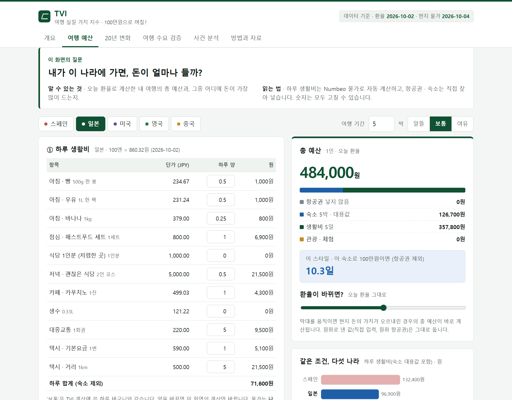

오늘() 환율로 계산하면
같은 100만원인데 4배 가까이 차이가 납니다. 이 차이는 무엇이 만들고, 사람들의 여행을 바꿀까요?
고등학교 AI 융합 탐구 프로젝트
이 장의 질문
여행자의 하루를 정해 놓고, 그 나라 물가로 값을 매겼습니다.
물가: Numbeo(전 세계 사람들이 입력한 물가 사이트), 2026-10 · 숙소는 원룸 월세 ÷ 30으로 대신함
예: 스페인, 2025년
이 장의 질문
함정: 돈의 가치도 변한다
2005년의 100만원은
157만원
지금 돈으로 이만큼입니다.
한국 물가가 20년 동안 57% 올랐기 때문입니다.
그래서 해마다 예산을 '지금 돈 가치'로 맞춰 다시 셌습니다(실질).
이 장의 질문
해외여행을 가느냐?
예
어느 나라로 가느냐?
거의 관계 없음
원화가 약해지면 모든 나라가 함께 비싸지니까, 그중 어느 나라를 고를지는 바뀌지 않았습니다.
이 장의 질문
그 나라로 간 사람의 비중이 1년 전보다 얼마나 변했나 · ■ 환율로 예상한 변화 ■ 실제 변화
이 장의 질문

TVI 앱 · 인터넷 없이도 열립니다
1오늘 환율로 내 여행 예산 계산
2항공권 · 숙소 · 관광지 예시 고르기
3"환율만 바뀐 세상" 같은 20년 실험
4사건 퀴즈와 기사 원문 링크
jwj-nick.github.io/high1/tvi/
정리
알아낸 것
· 돈의 가치까지 따지면 20년 동안 일본만 싸졌다
· 싸지면 해외여행은 더 간다(변화의 62%)
· 어느 나라를 고를지는 돈만으로 정해지지 않는다
한계
· 나라당 자료가 5~16년뿐이다
· 원화가 약할 때는 경기도 나빠서, 돈 때문인지 소득 때문인지 완전히 나누지 못했다
배운 것
· 명목과 실질은 다르다
· 데이터의 함정은 직접 열어 봐야 보인다
· AI에게는 한 조각씩 시키고, 맞는지는 손 계산과 원문으로 확인한다
자료: Numbeo.com · 한국은행 ECOS · World Bank · 한국관광 데이터랩 · 기사 원문(서울신문, 외교부). 감사합니다.